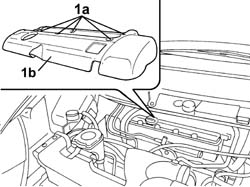
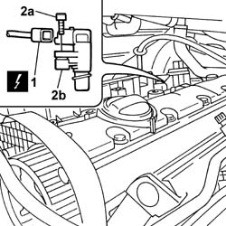
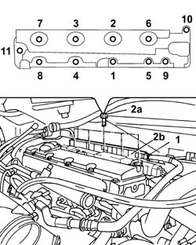
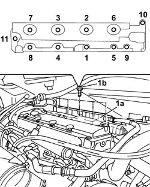

1016A26 CAM COVER WITH BUILT IN OIL VAPOUR SEPARATOR R R
- Path
- Procedures > 10 ENGINE > 1016 CYLINDER HEAD/S > 1016A CAM COVERS > 1016A26 CAM COVER WITH BUILT IN OIL VAPOUR SEPARATOR R R
- Kind
- repair procedure (removal / refitting; the operation number is the code)
- Applies to
- engines: 2.0 16v; all production periods
- Interactive page
- https://sloeber94.github.io/elrnDB-fUlss/en/#/179006872
Applies to: engines: 2.0 16v; all production periods
 Removing
Removing
 Refitting
RefittingOp. 5010B18 CLIMATE CONTROL UNIT AIR INTAKE - R.R.
1. Turn retaining bolts (1a) through 90° and remove coil cover (1b).

Applies to: engines: 2.0 16v; all production periods
1. Disconnect the electrical connection for the cam angle sensor.
2. Undo the fixing bolts (2a) and remove the cam angle sensor (2b).

Applies to: engines: 2.0 16v; all production periods
1. Disconnect the quick-release fitting of the oil vapour recirculation pipe from the oil vapour separator.
2. Unscrew retaining bolts (2a) in the order shown in the figure and remove the cam cover with built-in oil vapour seperator (2b).

Applies to: engines: 2.0 16v; all production periods
Refitting
Removing- Replace the gasket with a one of the same type .
1. Fit the cam cover with built-in oil vapour separator (1a), tighten the bolts retaining cam cover (1b) to torque in the order shown in the figure.
 | Value - daNm | Fastening | Component | Ø |
|---|---|---|---|---|
1b | 0.5 + 1.1 | Bolt | TAPPET COVER with built in oil vapour separator | - |
- Connect the quick-release connector of the oil vapour recirculation pipe from the oil vapour separator.

Applies to: engines: 2.0 16v; all production periods
- Fit the coil cover coil and turn the retaining pins through 90° to secure.